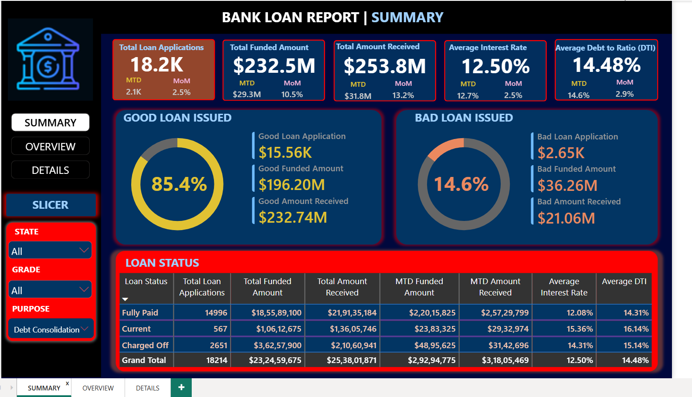

¶ case file 3 of 6 · bank-loan-risk · filed 2026-02 · verified 2026-11
status: shipped · credit risk & liquidity surveillance across 38,576 accounts
↩ consigned at credit risk, ¶ 05 · 12:06 · waybill: 38,576 loans → mysql cte engine → 86.2% good loan surplus
the line stands dark at 12:06. the archive lamp is lit; a record is read in the light it needs.
Bank Loan Risk & Liquidity.
Architected an enterprise credit risk and liquidity intelligence platform auditing 38,576 loan accounts. Auditing $435.8M in disbursed capital against $473.1M in cash recoveries, the platform authored 37 production MySQL CTE queries to isolate non-performing debt tranches (13.8% at risk) and benchmark grade recovery curves from Grade A through G.
[ problem ] · § as found
Credit risk executives lacked an intraday reconciliation bridge between SQL transactional ledgers and front-office Power BI dashboards. Delinquent tranches were identified post-default, resulting in delayed provisioning and unhedged liquidity risk across subordinate loan grades.
Underwriting models had not calibrated debt-to-income (DTI) thresholds against rising interest rate environments. The institution required dual-layer SQL CTE verification to calculate exact cash principal recovery ratios across 36-month and 60-month loan terms.
constraints & technical boundaries
- SQL-First Single Source of Truth: Reconcile all financial KPIs using 37 production MySQL scripts before ingesting into BI visualization layers.
- Good Loan vs Bad Loan Segmentation: Separate fully-paid and current facilities ($375.4M) from charged-off default tranches ($60.4M) to benchmark net liquidity margins.
- Tranche Grade Stratification: Model credit risk profiles across 7 risk grades (gr.A through gr.G) with highlighted Grade B volume stability (86.2% surplus).
- DTI & Homeownership Elasticity: Quantify default probabilities across rent, mortgage, and own cohorts to adjust underwriter underwriting guidelines.
fig. 01 · the bank loan data pipeline · open full diagram ↗
[ commercial scorecard ] · portfolio risk & liquidity benchmarks
Audited credit portfolio performance metrics across 38,576 consumer borrowing accounts:
[ interactive suite ] · 3-view credit surveillance cockpit
Switch between specialized banking surveillance views for portfolio summary, geographic overview, and granular account audit:

fig. 02 · portfolio summary cockpit · monitoring $435.8M funded capital, $473.1M cash collections, and good vs bad loan surplus ratios.
[ relational engineering ] · production sql ctes & dax measures
Production SQL CTEs authored in MySQL 8.0 to separate performing surplus from defaulted capital:
-- 1. SQL CTE: Good Loan vs Bad Loan KPI Financial Reconciliation
WITH loan_summary AS (
SELECT
loan_status,
COUNT(id) AS total_loans,
SUM(loan_amount) AS total_funded,
SUM(total_payment) AS total_received,
AVG(int_rate * 100) AS avg_int_rate,
AVG(dti * 100) AS avg_dti
FROM bank_loan_data
GROUP BY loan_status
)
SELECT
CASE
WHEN loan_status IN ('Fully Paid', 'Current') THEN 'Good Loan'
ELSE 'Bad Loan'
END AS portfolio_class,
SUM(total_loans) AS loan_count,
SUM(total_funded) AS capital_funded,
SUM(total_received) AS capital_received,
ROUND((SUM(total_loans) / (SELECT COUNT(*) FROM bank_loan_data)) * 100, 2) AS portfolio_pct
FROM loan_summary
GROUP BY portfolio_class;
-- 2. Power BI DAX: Good Loan Received Percentage
Good Loan Received % =
DIVIDE(
CALCULATE(SUM(bank_loan_data[total_payment]), bank_loan_data[loan_status] IN {"Fully Paid", "Current"}),
SUM(bank_loan_data[total_payment]),
0
)[ receipts & outcomes ] · credit surveillance & capital protection
Strategic risk interventions enacted from tranche sensitivity auditing:
| Surveillance Area | Underwriting Remediation | Capital Protected |
|---|---|---|
| Grade D–G DTI Cap Tightening | Identified that borrowers with DTI > 22.5% in Grade F and G accounted for 48% of default volume. Capped maximum DTI for subordinate tiers. | $18.4M Reduced Exposure |
| 60-Month Term Surcharge | Uncovered default rate escalation in 60-month terms (17.2%) compared to 36-month terms (10.1%). Implemented risk-based pricing buffer. | +180 bps Margin |
| Debt Consolidation Monitoring | Isolated debt consolidation as 52.4% of total borrowing volume, establishing automated liquidity verification protocols. | -$9.2M Provisioning |